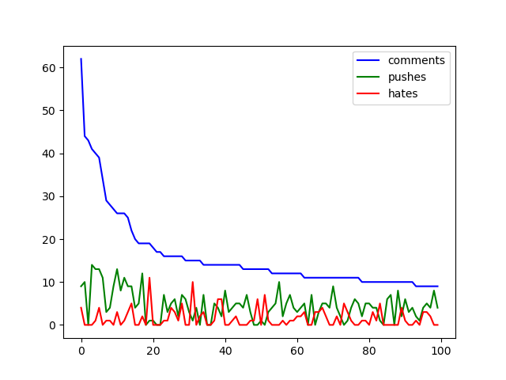
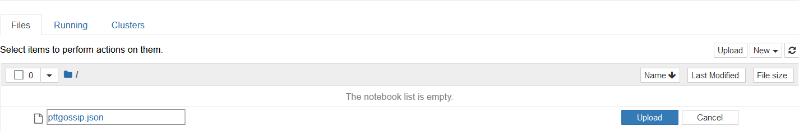
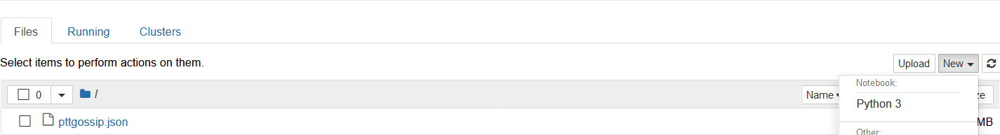
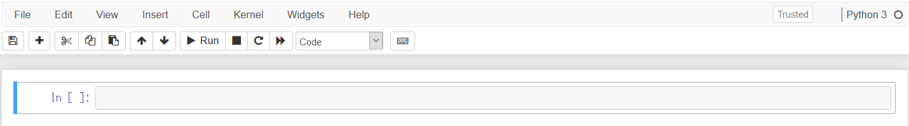
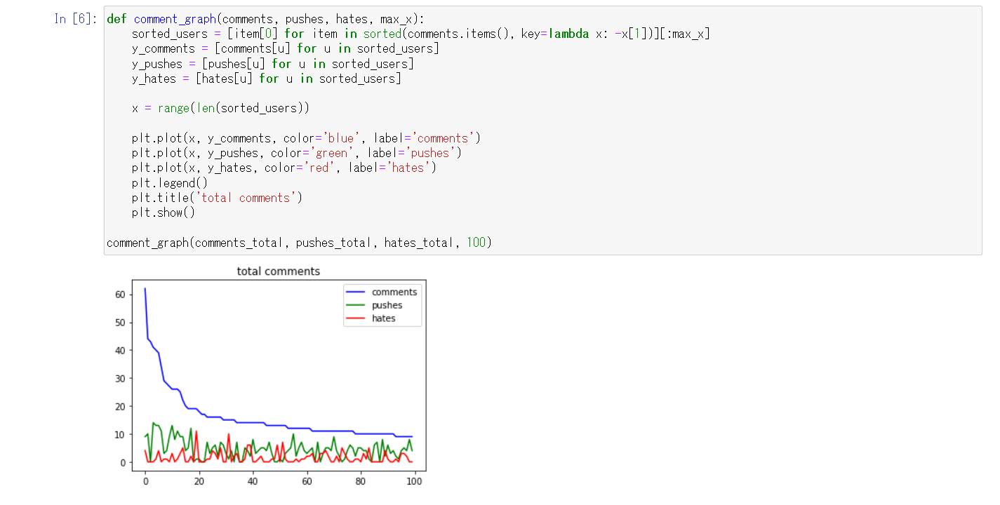
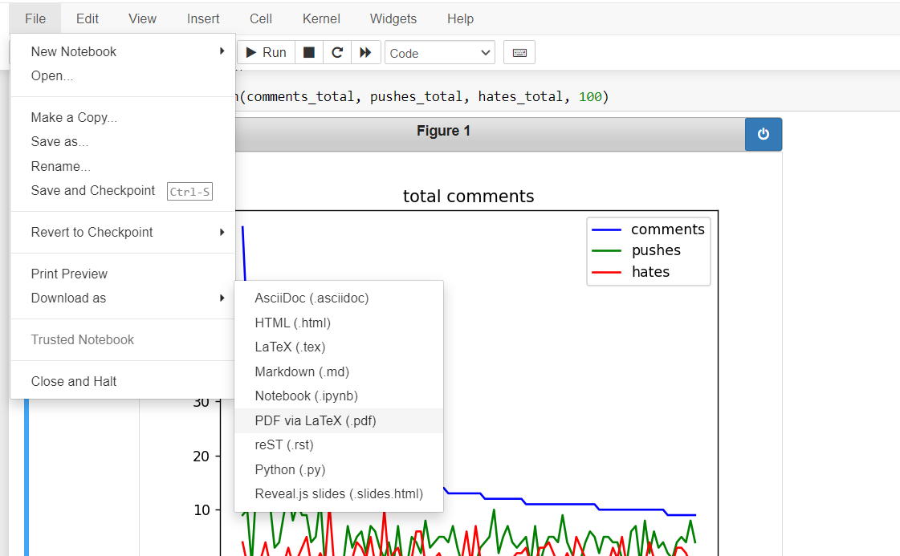

從爬蟲開始的實作，分析資料前總得先有資料吧(;‘∀’)
作為資料分析的前置作業，就來爬取媒體最愛的PTT，畢竟BBS類型的資料還蠻標準的，雖然本人不太逛PTT就是了…
完成的souce code已放上github：https://github.com/mikanbearer/scrapy_sample
使用爬蟲抓取資料
首先把環境部屬好
$ scrapy startproject scrapy_sample
$ cd scrapy_sample/scrapy_sample/spiders
$ scrapy genspider ptt_gossiping www.ptt.cc/bbs/Gossiping
編輯第一個spider，當然response是PTT確認年齡的頁面，之後要再改改
|
|
可以從source code得知年齡確認用了一個form，會post兩種value，yes和no，現在就就直接post了，省時省力
|
|
再來就要開始換頁，把spider改成這樣，頁是最好先限制一下，不然好幾萬頁有點吃不消
|
|
接下來再小小修改一下after_ask()，使用一個for來多開幾個Reuqest，callback為parse_post
|
|
先定義這個簡單的function，就能看到response.url是個標題的網址，如此一來就可以開始抓內容了
def parse_post(self, response):
print(response.url)
準備好items
|
|
接下來回到spider，修改成下列的樣子就差不多大功告成
|
|
完成輸入指令，就能看到貼文被抓下來啦
$ scrapy crawl ptt_gossiping -o test.json
遲來的資料分析，原本想通通和爬蟲一起塞一篇，但一次做太多自己沒辦法進入狀況，只好先練習資料可視化開始熟悉手邊工具，之後再循序漸進繼續深入
這篇比較有點過渡期的味道，畢竟沒有太多內容，所以就索性加了一點點Jupyter notebook
練習的檔案，是用之前抓的PTT貼文
https://github.com/mikanbearer/scrapy_sample
使用Matplotlib製圖
首先用pip下載需要用的包
$ pip install matplotlib
接下來將json做個簡單的處理
import json
from collections import defaultdict
with open('pttgossip.json') as f:
posts = json.load(f) #讀取練習的jason
#建立defaultdict物件，value type為int
comments_total = defaultdict(int)
pushes_total = defaultdict(int)
hates_total = defaultdict(int)
for post in posts:
for comment in post['comments']:
user = comment['user']
comments_total[user] += 1
if comment['score'] > 0:
pushes_total[user] += 1
elif comment['score'] < 0:
hates_total[user] += 1
這樣就能以user為key，value則是一個count
接著可以畫圖囉，以user為x，那麼回應、推、噓三個則為y值，以這構想大概這樣做
#以comment數來排序成user list，長度取50
sorted_users = [item[0] for item in sorted(comments_total.items(), key=lambda x: -x[1])][:]
#以user list來排序回覆count
y_comments = [comments_total[u] for u in sorted_users]
#以user list來排序推文count
y_pushes = [pushes_total[u] for u in sorted_users]
#以user list來排序噓文count
y_hates = [hates_total[u] for u in sorted_users]
這樣就處理好x與三個y
接下來就能用mtatplotlib產生簡單的圖
import matplotlib.pyplot as plt
def comment_graph(comments, pushes, hates, max_x):
sorted_users = [item[0] for item in sorted(comments.items(), key=lambda x: -x[1])][:max_x]
y_comments = [comments[u] for u in sorted_users]
y_pushes = [pushes[u] for u in sorted_users]
y_hates = [hates[u] for u in sorted_users]
x = range(len(sorted_users))
plt.plot(x, y_comments, color='blue', label='comments')
plt.plot(x, y_pushes, color='green', label='pushes')
plt.plot(x, y_hates, color='red', label='hates')
plt.legend()
plt.show()
最後完成的code如下：
import json
from collections import defaultdict
import matplotlib.pyplot as plt
with open('pttgossip.json') as f:
posts = json.load(f)
comments_total = defaultdict(int)
pushes_total = defaultdict(int)
hates_total = defaultdict(int)
for post in posts:
for comment in post['comments']:
user = comment['user']
comments_total[user] += 1
if comment['score'] > 0:
pushes_total[user] += 1
elif comment['score'] < 0:
hates_total[user] += 1
def comment_graph(comments, pushes, hates, max_x):
sorted_users = [item[0] for item in sorted(comments.items(), key=lambda x: -x[1])][:max_x]
y_comments = [comments[u] for u in sorted_users]
y_pushes = [pushes[u] for u in sorted_users]
y_hates = [hates[u] for u in sorted_users]
x = range(len(sorted_users))
plt.plot(x, y_comments, color='blue', label='comments')
plt.plot(x, y_pushes, color='green', label='pushes')
plt.plot(x, y_hates, color='red', label='hates')
plt.legend()
plt.title('total comments')
plt.show()
comment_graph(comments_total, pushes_total, hates_total, 100)
這樣就能看到前幾名回應活躍的user了

使用Jupyter Notebook
畢竟要做資料練習，果然還是有個shell一般的操作方式最好吧？可用又可讀，如同IPython notebook，但這次來用用Jupyter
$ pip install ipython jupyter
輸入指令啟動notebook
$ jupyter notebook
...
[I 09:56:21.690 NotebookApp] Jupyter Notebook 6.1.3 is running at:
[I 09:56:21.690 NotebookApp] http://localhost:8888/?token=389282ffb93c1426ba34e094ef8b8667ad6812ad8575a0f6
[I 09:56:21.691 NotebookApp] or http://127.0.0.1:8888/?token=389282ffb93c1426ba34e094ef8b8667ad6812ad8575a0f6
接下來開啟帶有token的網址，把要分析的json上傳

接著建立新的Pyhon3 Notebook

接下來就能進入notebook操作了

加上下列就能將圖片inline顯示
%matplotlib notebook
run完結果範例就像是這樣

notebook也能以.ipynb以外的格式download下來用其他工具閱讀

完成的notebook(.ipynb)放在這裡可直接觀看喔